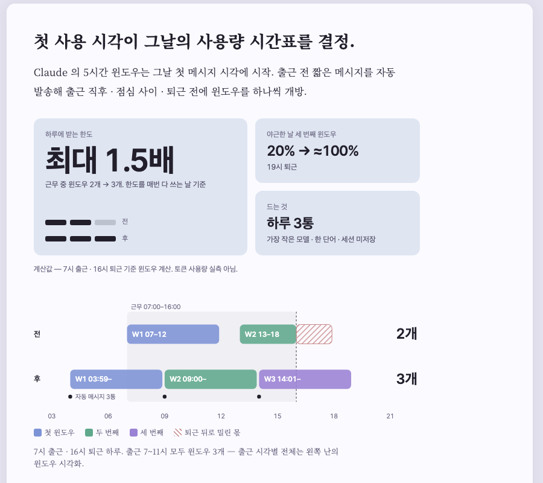
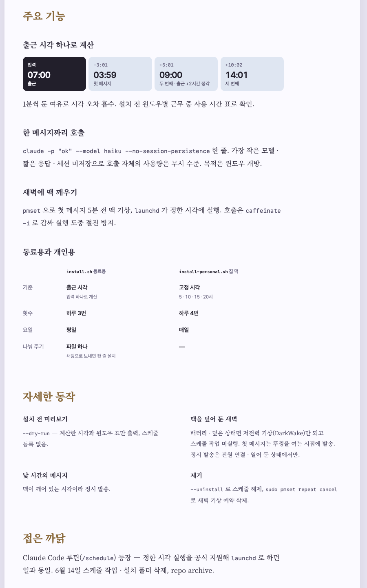
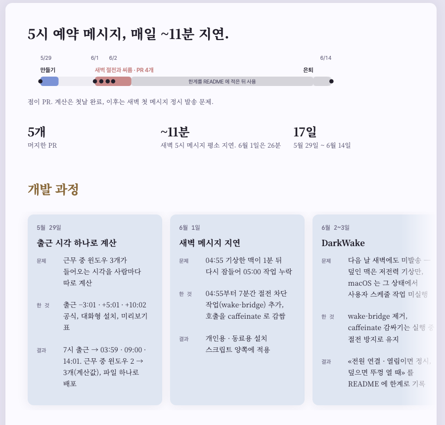

여섯 가지를 지금(왼쪽 · 실제 화면)과 시안(오른쪽)으로. 소개 첫 화면은 ① ② ④ 가 한 자리에 겹쳐 한 벌로 그렸다.
① 하루 도식은 왜 만들었나로 옮기고 소개는 대표 숫자만. 대표 숫자의 2칸→3칸 막대도 뺀다 — «2 → 3» 이 한 화면에 세 번 나오던 것. ② 훅 위에 은퇴 한 줄과 대체한 것. ④ 훅을 숫자로. 대신 첫 화면 끝에 다음 판으로 가는 두 칸.
지금

시안
④9시간 근무, 윈도우는 2개뿐.
Claude 의 5시간 윈도우는 첫 메시지 시각에 시작. 출근 전 자동 메시지로 근무 중 윈도우 3개 확보.
계산값 — 7시 출근 · 16시 퇴근 기준. 토큰 사용량 실측 아님.
은퇴한 도구라 자세한 동작(미리보기 · 덮은 맥 · 제거)을 읽을 사람이 없다. 주요 기능 넷 중 한 메시지 호출 · 새벽 깨우기는 개발기와 겹친다. 남는 것은 계산 칸과 두 스크립트 표, 접은 까닭 한 줄.
지금 · 주요 기능 넷 + 자세한 동작 넷 + 접은 까닭

시안 · 절 둘
새벽엔 pmset 으로 맥 기상, launchd 로 claude -p "ok" --model haiku 한 줄.
Claude Code 루틴(/schedule)이 정한 시각 실행을 공식 지원. 6월 14일 종료, repo archive.
가장 흥미로운 이야기(새벽에 깨운 맥이 다시 잠드는 25분)가 셋째 카드와 페이지 아래에 있었다. 훅 바로 밑에 그 도식, 기간 띠는 글자를 키워 한 줄 요약으로. 숫자 셋은 도식이 말하니 뺀다.
지금

시안
5시 예약 메시지, 매일 ~11분 지연.
깨운 맥이 예약 시각까지 버티지 못함 → 막으려던 wake-bridge 도 덮인 맥(DarkWake)에선 무력.
(카드 넷 — 지금과 같음)
이력서 · 메신저로 링크를 보내면 뜨는 카드. 지금은 그림 칸이 비고, 설명도 사이트 공통 문구. 시안은 대표 숫자와 하루 도식을 1200×630 한 장으로 구운 표지.
지금
시안